Матричний калькулятор
Про метод
Обчислити ранг матриці А, де:

від 1-го рядка віднімемо 2-гий помноженй на 2, від 4-ого відняти 2-гий помноженй на 2
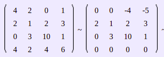
поміняємо місцями рядки
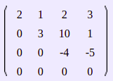
отримана матриця є ступінчастою, отже rank (A) = 3

Знайти визначник матриці A
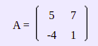
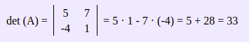
Найти обернену матрицю матриці A
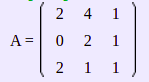
Знайдемо визначник матриці
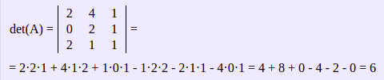
Знайти алгебраїчні доповнення матриці A
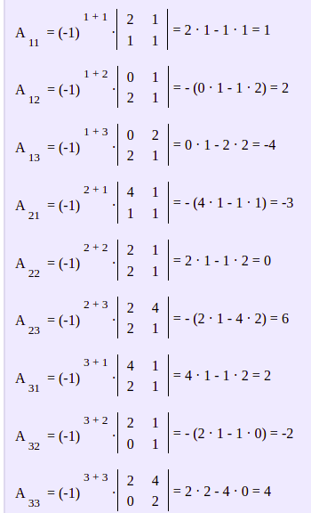
Запишемо союзну матрицю
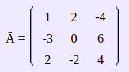
Знайдемо обернену матрицю
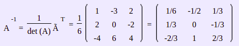
Відповідь
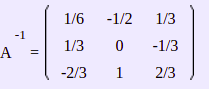
Знайти трансоновану матрицю AT для матриці - 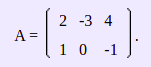
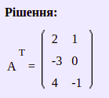
Ранг матриці
- 1. Ранг матриці дорівнює кількості ненульових рядків після приведення матриці до ступінчастого вигляду, використовуючи елементарні перетворення над рядками і стовпцями матриці.
- 2. Якщо в матриці A знайдений ненульовий мінор k -го порядку M. Розглянемо всі мінори ( k + 1) -го порядку, що включають в себе (оздоблюють) мінор M; якщо всі вони рівні нулю, то ранг матриці дорівнює k . Якщо серед оздоблюють мінорів знайдеться ненульовий, то вся процедура повторюється.
Приклад
Визначник матриці
- 1. Визначник одиничної матриці дорівнює одиниці.
- 2. Визначник матриці з двома рівними рядками (стовпцями) дорівнює нулю.
- 3. Визначник матриці з двома пропорційними рядками (стовпцями) дорівнює нулю.
- 4. Визначник матриці, що містить нульовий рядок (стовпець), дорівнює нулю.
- 5. Визначник матриці дорівнює нулю якщо дві (або декілька) рядків (стовпців) матриці лінійно залежні.
- 6. Визначник матриці не зміниться, якщо до якоїсь його рядку (стовпцю) додати інший рядок (стовпець), помножену на деяке число.
- - Для матриці першого порядку значення визначника дорівнює значенню елемента цієї матриці 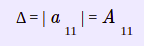
- - Для матриці 2 × 2 значення визначника дорівнює різниці добутків елементів головної та побічної діагоналей
Властивості визначника матриці

Приклад
Обернена матриця
- 1. Обернена матриця існує тільки для квадратних матриць визначник яких не дорівнює нулю.
Властивість оберненої матриці
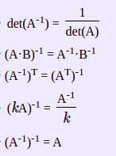Приклад
Піднесення матриці до степеню
- 1. Суть операції піднесення матриці до степеня полягає в множенні матриці саму на себе n-ну кількість разів.
- 2. Для піднесення матриці до степеню необхідно, щоб матриця була квадратною.
Властивість піднесення матриці до степеню
An = A * A * A * A... і т.д
A2 = A * A
A3 = A * A * A
Приклад
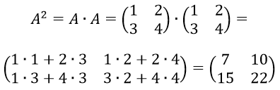
Транспонування матриці
- 1. Транспонування матриці - це операція над матрицею, при якій її рядки і стовпці міняються місцями 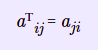
- Якщо матриця А має розмір nxm, тоді транспонована матриця AT матиме розмір mxn 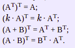
Властивість транспонування матриці
Приклад
Множення матриць
- 1. Множення матриць можливо тільки в тому випадку, коли кількість стовпців 1-ої дорівнює кількості рядків 2-ої.
- 2. В результаті виходить нова матриця, число рядків якої дорівнює числу рядків 1-ої, а число стовпців - числу стовпців 2-ої.
- 3. Наприклад, якщо помножити матриці розміру n x k на k x m, то в результаті ми отримаємо нову з розмірністю n x m.
- (A · B) · C= A · (B · C) - створення матриць асоціативно
- (z · A) · B= z · (A · B), де z - число
Властивість множення матриці
Приклад
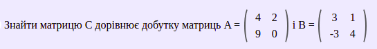

Додавання/Віднімання матриць
- 1. Додавати і віднімати можна матриці одного розміру в результаті виходить матриця того ж розміру.
- 2. Додавання матриць (сума матриць) A + B це - операція обчислення матриці C, всі елементи якої рівні попарній сумі всіх відповідних елементів матриць A і B, тобто кожен елемент матриці C дорівнює: 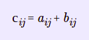
- 3. Віднімання матриць (різниця матриць) A - B це - операція обчислення матриці C, всі елементи якої рівні попарной різниці всіх відповідних елементів матриць A і B, тобто кожен елемент матриці C дорівнює: 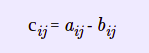
Властивість для додавання.віднімання матриць
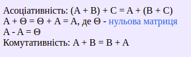Приклад
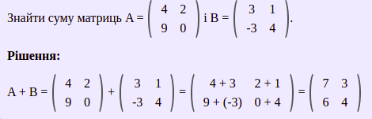